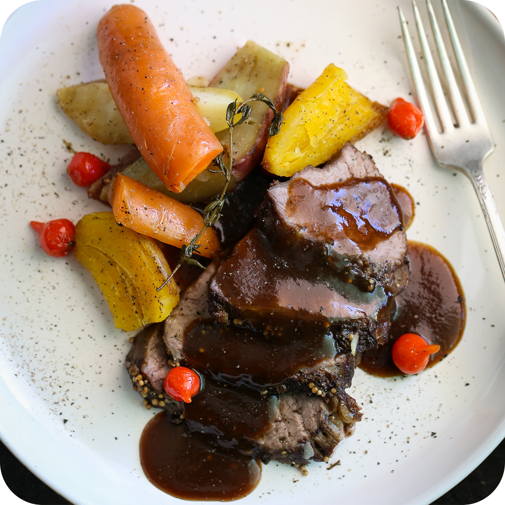
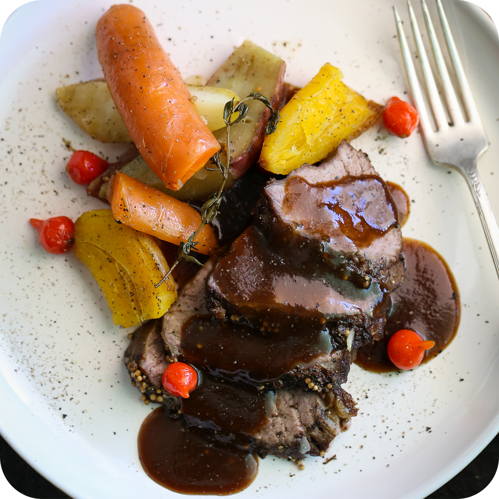

Maminha Assada com Cerveja Escura
RECEITA
INGREDIENTES
- 1 peça de maninha (esta tinha 1.2kg)
- 3 dentes de alho amassados
- 1 cerveja preta (355ml)
- 1 colher de sopa de pimenta do reino em grãos
- 2 colheres de sopa de mostarda em grãos
- 1 colher de sopa de coentro em grãos
- Um punhado de alecrim, tomilho e sálvia (pode usar desidratado também)
- Sal a gosto
- Batatas
- Batata doce
- Mandioquinha (baroa, salsa)
- Cenoura
- Pimenta biquinho (opcional)
- Toda a marinada da carne
- 2 colheres de mel
- 1 colher de amido de milho (maizena)
MODO DE PREPARO
Em um pilão esmague todos os grãos e ervas.
Tempere a carne com a mistura de sal, alho, grãos e ervas;
massageando toda a carne. Acrescente a cerveja e deixe marinar
pelo menos 2 horas (faça na noite anterior se possível)
Legumes
Coloque todos os legumes para cozinhar em água fervente
até que fiquem ao dente – macios sem desmanchar – já que
vão para o forno junto com a carne. Assim que estiverem
cozidos, passe em água corrente, espere esfriar e corte
em fatias longas e tempere com sal, azeite e um pouco de
pimenta do reino moída na hora. Pela foto você pode
perceber que usei tudo com casca, porque gosto do visual
mais rústico, mas você pode descascar tudo se preferir.
Maminha
Hora de selar a carne: tire do líquido mas reserve esta
marinada, vamos usá-la mais tarde para preparar um molho
reduzido. Em uma frigideira bem quente grelhe a carne
até dourar bem todos os lados.
Preaqueça o forno a 180 graus, ou em temperatura média.
Coloque a carne em um refratário, coloque os legumes
cozidos e temperados as pimentas em volta dela.
Cubra tudo com alumínio e leva ao forno por mais ou menos
1:20h, mas fique atento ao ponto, que pode variar muito
de acordo com o forno ou o tamanho da carne.
Molho Reduzido
Em uma panela em fogo baixo, coloque a marinada da
carne e o mel. Dilua e misture a maizena em um copo
de água e acrescente à panela. Misture até engrossar e
experimente antes de servir, ele provavelmente vai estar
bem salgado, com um leve dulçor e com um sabor bem concentrado.
É delicioso, mas use com moderação.
5. Após o passo anterior, sirva o carré de cordeiro no forno
com ramos de alecrim e, por exemplo, redução de vinagre
balsâmico ou molho gravy para uma apresentação mais requintada.
 

Coloque a carne em um refratário, coloque os legumes
cozidos e temperados as pimentas em volta dela.
Cubra tudo com alumínio e leva ao forno por mais ou menos
1:20h, mas fique atento ao ponto, que pode variar muito
de acordo com o forno ou o tamanho da carne.
carne e o mel. Dilua e misture a maizena em um copo
de água e acrescente à panela. Misture até engrossar e
experimente antes de servir, ele provavelmente vai estar
bem salgado, com um leve dulçor e com um sabor bem concentrado.
É delicioso, mas use com moderação.
com ramos de alecrim e, por exemplo, redução de vinagre
balsâmico ou molho gravy para uma apresentação mais requintada.